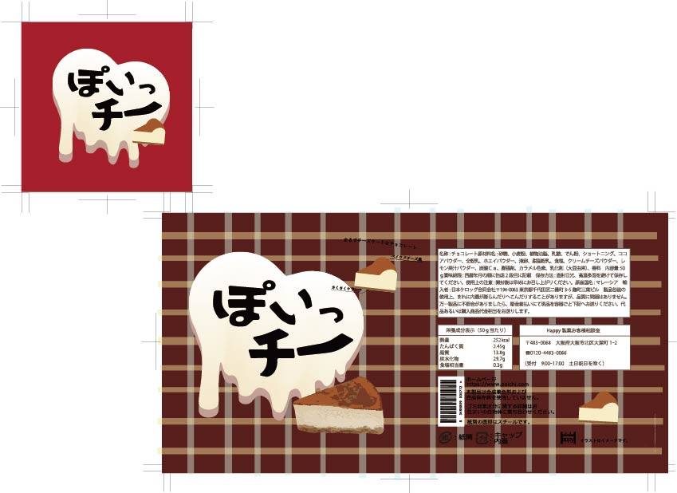
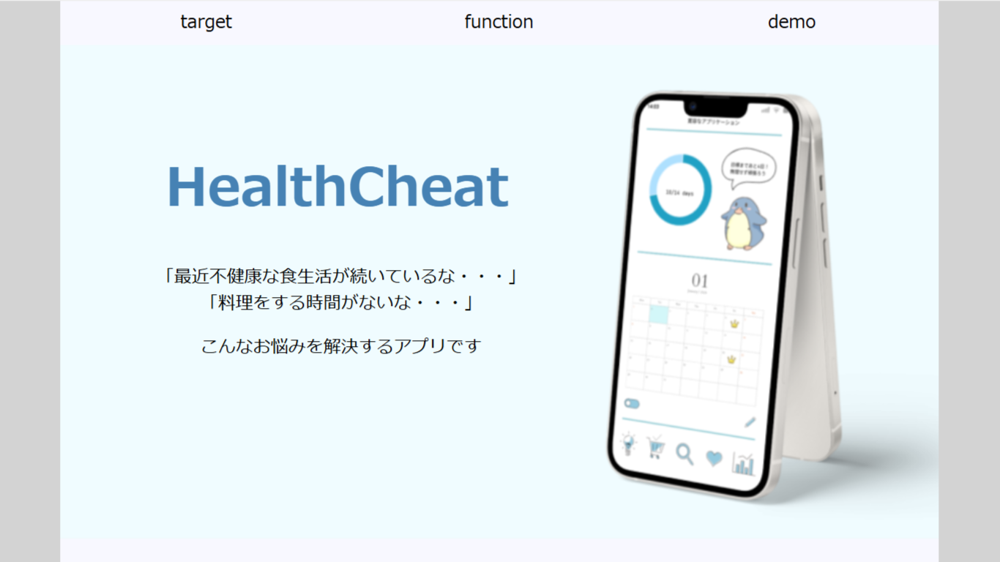

こんにちは！はじめまして！
ここではウェブサイト制作の練習としてわたしについてを制作してみます。
よければのぞいてみてください＾＾
2004年生まれ大阪住みの大学4回生です
常に頭ではなにかしら考えている私のMBTIはINTPです
趣味は浅く広くタイプでカメラやお菓子作り、ライブに行く、ゲームなど...いろいろです。
アルバイトはカフェやテーマパークで働いています！
笑顔大好き！楽しいこと大好き！
向き不向きより前向きに様々なことに挑戦していたいです
Instagram：＠kimagurere ＠kimagurere2
～大学の講義で受講～
html/css
javascript
python
adobe illustrator
～資格～
実用英語技能検定2級
運転免許取得中
私のさまざまなスキナコトについて
趣味と言えるほどでもないので好きなことで表現すると...
カメラ
ミスチル
お菓子作り
ゲーム
フェス
共通のスキナコトがあればうれしいです

授業課題 パッケージデザイン

授業課題 ウェブページ
初めてのウェブ制作物
現在は、卒業研究でアプリケーション制作に向け進めています